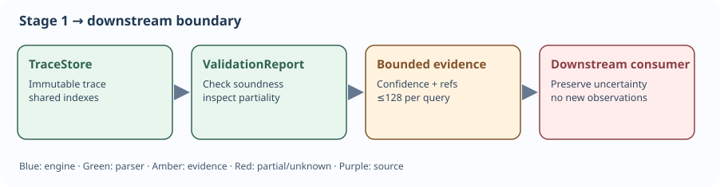

Stage 2 handoff · guarantees, limits and glossary #
Level 1 · Intuition #
Stage 1 hands future consumers a validated, immutable, bounded-query evidence source, not a complete reconstruction of C program meaning. A sound trace can be partial; an observed object can have uncertain origin. Stage 2 may derive explanations while displaying their evidence and qualifications, but must never turn a missing observation into a fact.


Level 2 · The freeze contract #
- Load a supported schema-v2 document through
TraceStore; remember ingestion is schema-only. Callvalidated_semantic()and inspectreport().is_structurally_sound(),is_partial()and individual findings. - Share the canonical
Arc<DebugSessionTrace>/Arc<TraceIndexes>via clonedTraceStore; use borrowed records and same-traceEvidenceRef, not numeric IDs from another execution. - Page checkpoint variables, events and diagnostics using explicit half-open ranges no wider than 128; request all subsequent pages. Distinguish
Unavailable, empty evidence and an actual error. - Maintain separate execution status, attempted/retained events, gaps, byte readability, lexical scope, initialization (often unknown), heap-history/observed PID scope and semantic relationship confidence.
- Keep heap realloc links dependent on recorded event and same-PID lifetime boundaries; no predecessor from numeric address equality. Never equate pointer containment to origin, AST syntax to execution, Valgrind source site to primary-run allocation ID or scoped PID completion to complete descendants.
Level 3 · Concrete API handoff #
let view = store.validated_semantic();
if !view.report().is_structurally_sound() {
// Display contradictory imported relationships, not a definite explanation.
}
let scope = view.process_coverage(); // descendants remain unavailable
let stop = view.checkpoint_summary(snapshot_index)?;
let _ = (scope.unobserved_descendants, stop.reference.location());This is a body excerpt using public APIs from src/trace_parser/{semantic,consumer,evidence}.rs; follow the complete runnable example. The API tables list query signatures; validation covers adversarial realloc imports. Stage 2 is future work: no new execution interpreter, provenance graph, byte initialization detector, GUI or data model is provided by this site.
Performance (not a guarantee) #
In the independent Stage 1 release-profile audit, a 3.337 MB, 900-snapshot / 3,143-real-instruction-event trace took approximately 48 ms median typed parse, 1.13 ms index build, 0.555 ms once-only semantic validation and ~17 MiB parser-process RSS after indexing across three runs. A 461 KB small trace took ~8.27 ms parse and ~0.264 ms index build. The index estimate for the heavy sample was 28,369 bytes, not process RSS; per-query TP-7 measurements reported zero allocations but once-only validation allocated. Host, allocator and workload variation are material; these are not Stage 2 latency commitments. Input/JSON byte limits do not bound total RAM. See limits.
Known limitations #
- Coverage: user-code, selected-thread and followed-inferior stop scope; gaps, no complete all-thread or fork-descendant instruction timeline; silent children unknown.
- Heap: only linked-object allocator wrappers and accepted telemetry; incomplete transport/ACK or legacy metadata lowers confidence. Pointer address containment is not allocation provenance. Historical bytes never get rewritten by later frees/reuse.
- Static/diagnostic: AST candidates do not prove expression execution. DWARF metadata may be missing. Valgrind and sanitizers are independent processes; equal source/address does not establish primary allocation identity.
- Memory: readable GDB bytes and lexical scope do not prove C initialization; unattempted or capped tails are not silently decoded.
- Resources/portability: no sandbox, hard total-engine-RAM guarantee or full parser streaming/seek index. Linux x86-64/GCC/GDB-supported evidence is not a universal cross-platform promise. Four pre-V2.1 files with removed fields remain unsupported on import.
Glossary #
| Term | Meaning |
|---|---|
| Checkpoint | Retained stopped snapshot; not every program instruction or stop |
| Stop ID | Processed GDB stop counter, distinct from vector/attempt indices |
| Event position | Index into canonical retained event array; never invent missing entries |
| Gap | Interval where instruction capture lacks exact events; unknown count |
| Allocation lifetime | Trace-local observed identity with PID/sequence boundaries, not an address |
| Provenance | Evidence of where a pointer originated; containment alone is insufficient |
EvidenceRef | Weak-trace-identity citation to a canonical record; not portable |
| Definite | Verified specific observation/relation under its documented scope |
| Candidate / Ambiguous | Plausible unproved relation / multiple compatible relations |
| Unavailable / Contradictory | Insufficient evidence / structurally rejected relationship |
| Partial coverage | Some observations missing; does not mean record corruption |
| Independent diagnostic | Valgrind or sanitizer output from another execution |